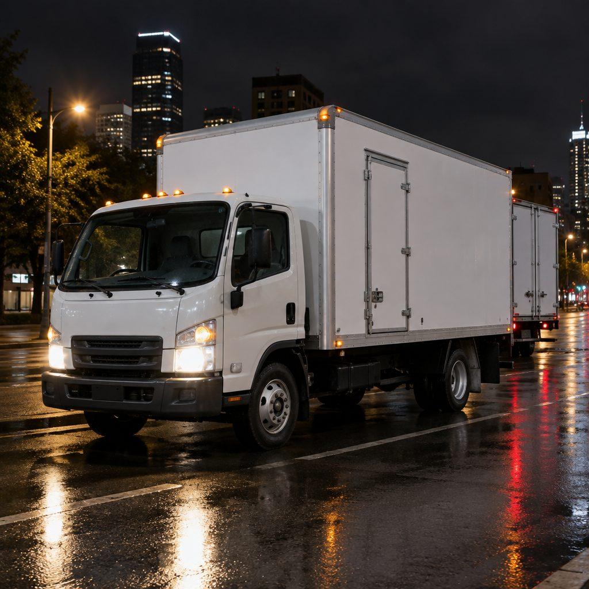

Круглосуточно, без диспетчеров и «ожидайте на линии». Ниже — что спрошу и что назову до выезда машины.
Главное правило: цену и время называю до выезда. Если по ходу выясняется, что груз не такой, как описали, — звоню и согласовываю, а не решаю за вас.
Отвечаю сам, в любое время. Опишите груз: что, сколько, откуда и куда.
Считаю по объёму, весу и расстоянию. Называю сумму и время приезда.
Приезжаю, загружаем, креплю ремнями. Проверяю, что ничего не мешает в пути.
Везу и разгружаю. Для юрлиц — документы, для частных — расчёт на месте.
Три минуты разговора — и вы знаете сумму. Чем точнее данные, тем меньше уточнений на месте.

Переезды часто делают вечером или в выходные, чтобы не мешать соседям и не стоять в пробках. Для меня это обычный режим работы.
Назовите адрес, вес и габариты — назову цену и время. Работаю круглосуточно, по Мозырю, Гомельской области, по РБ и в Россию.